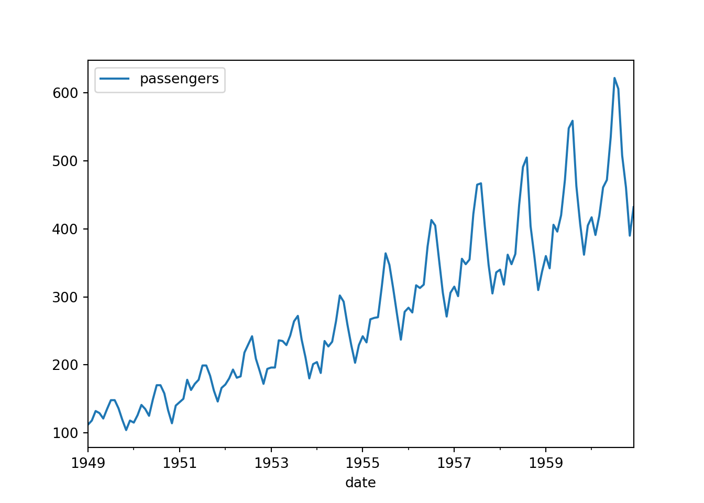
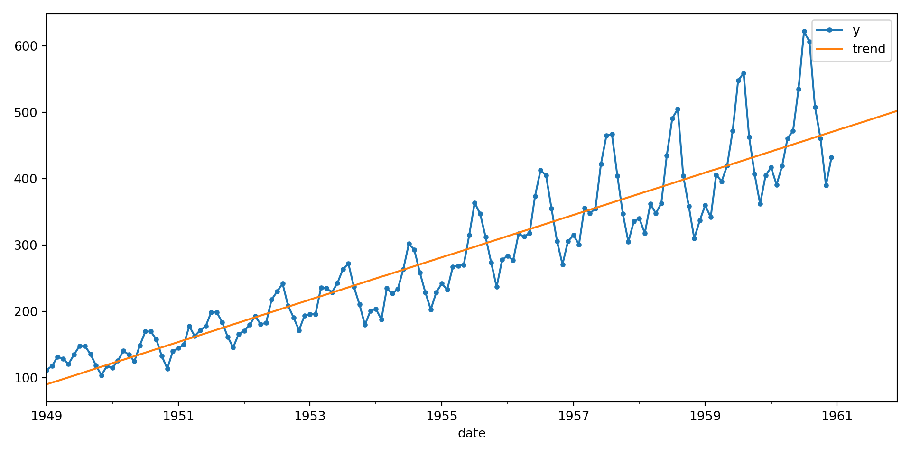
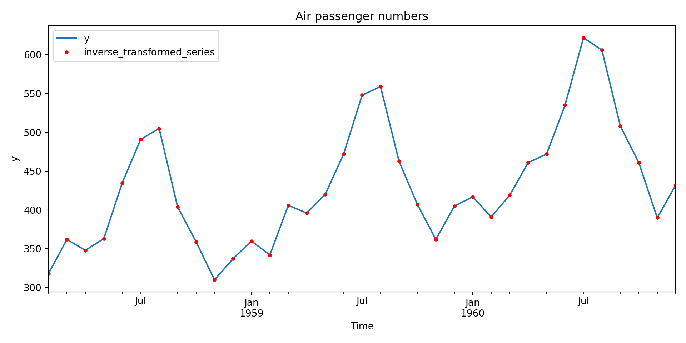
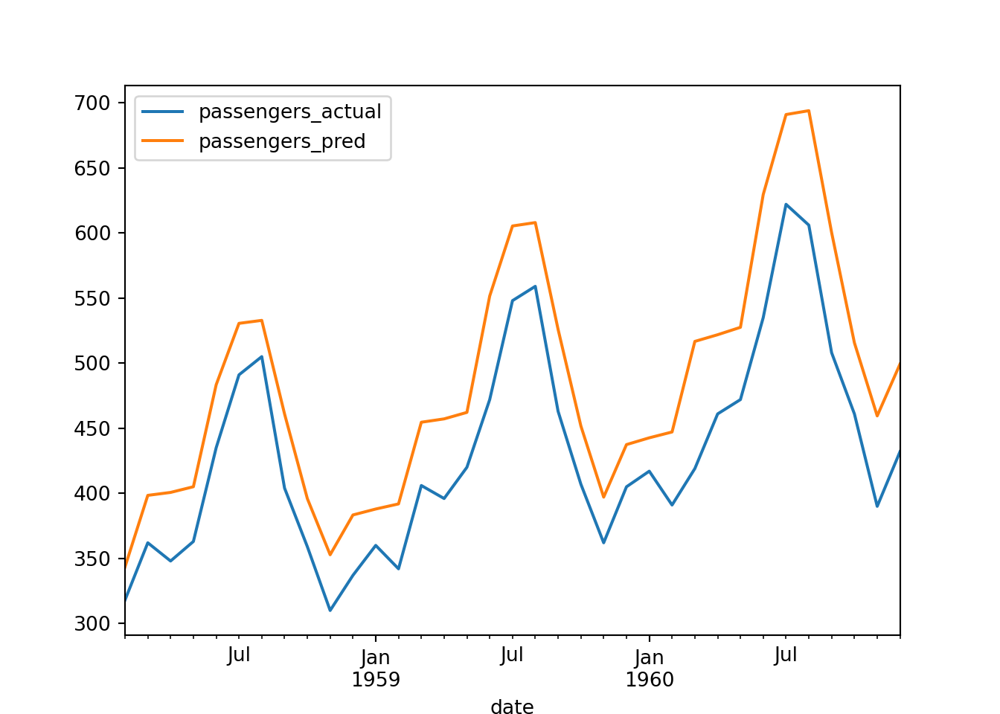

import numpy as np
import pandas as pd
import matplotlib.pyplot as plt
import seaborn as sns
import os
from sklearn.tree import DecisionTreeRegressor
from sklearn import set_config
from sklearn.base import clone
from sklearn.pipeline import make_pipeline, make_union
from sklearn.preprocessing import PolynomialFeatures
from sktime.forecasting.trend import PolynomialTrendForecaster
from sktime.transformations.series.boxcox import LogTransformer
from sktime.transformations.series.detrend import Detrender
from sktime.transformations.series.summarize import WindowSummarizer
from sktime.transformations.series.time_since import TimeSince
set_config(transform_output="pandas")
from sklearn.metrics import root_mean_squared_errorTree models in trends
file_path = os.path.expanduser("~/Documents") + "\\DS_advanced_website\\data\\example_air_passengers.csv"
raw_df = pd.read_csv(file_path,index_col = "date")
raw_df.index = pd.to_datetime(raw_df.index)plt.clf()
raw_df.plot()
plt.show()
Trend
trend_forecaster = PolynomialTrendForecaster(degree = 1)
trend_forecaster.fit(raw_df[["passengers"]].copy())PolynomialTrendForecaster()Please rerun this cell to show the HTML repr or trust the notebook.
PolynomialTrendForecaster()
forecast_range = pd.date_range(start = raw_df.index.min(),
end = raw_df.index.max() + pd.DateOffset(months = 12),
freq = "MS")
trend_forecast = trend_forecaster.predict(fh = forecast_range)fig, ax = plt.subplots(figsize=[10, 5])
raw_df.plot(y="passengers", marker=".", legend=None, ax=ax)
trend_forecast.plot(ax=ax)
ax.legend(["y", "trend"])
plt.tight_layout()
plt.show()
split_date = pd.to_datetime("1958-01-01")
train_set = raw_df.loc[raw_df.index <= split_date].copy().asfreq("MS")
test_set = raw_df.loc[raw_df.index > split_date].copy().asfreq("MS")
log_trans = LogTransformer()
detrend_trans = Detrender(forecaster=PolynomialTrendForecaster(degree=1))
detrend_pipe = make_pipeline(log_trans, detrend_trans)log_trans.fit(train_set)LogTransformer()Please rerun this cell to show the HTML repr or trust the notebook.
LogTransformer()
y_transformed = log_trans.transform(test_set)
y_restored = log_trans.inverse_transform(y_transformed)plt.clf()
fig, ax = plt.subplots(figsize=[10, 5])
test_set.plot(ax=ax)
y_restored.plot(marker=".", linestyle="none", color="r", ax=ax)
ax.legend(["y", "inverse_transformed_series"])
ax.set_xlabel("Time")
ax.set_ylabel("y")
ax.set_title("Air passenger numbers")
plt.tight_layout()
plt.show()

Tree model
time_feats = TimeSince()
lag_window_feats = WindowSummarizer(
lag_feature={
"lag": [1, 2, 3, 12],
"mean": [[1, 12]],
},
target_cols=["passengers"],
truncate="bfill",
n_jobs = 1
)
feat_eng_pipe = make_union(time_feats, lag_window_feats)
X_train_detrended = detrend_pipe.fit_transform(train_set.copy())
X_test_detrended = detrend_pipe.transform(test_set.copy())Recursive forecast
def make_recursive_forecast(forecast_horizon,X_train, y_train,
model, preprocess_pipe):
# Preprocess data and fit model
feature_source_data, model_spec,preprocess_pipe_spec = \
preprocess_data_and_fit_model(X_mat = X_train.copy(),
Y_mat = y_train.copy(),
model_spec = model,
preprocess_pipe_spec = preprocess_pipe)
# Make next prediction
next_pred = predict_next_point(feature_source_data = feature_source_data,
model_spec = model_spec,
preprocess_pipe_spec = preprocess_pipe_spec)
predictions_df = next_pred.copy()
# Update feature_source_data and iterate
for step in range(1, forecast_horizon):
feature_source_data = pd.concat([feature_source_data.copy(),
next_pred], axis = 0)
next_pred = predict_next_point(feature_source_data = feature_source_data,
model_spec = model_spec,
preprocess_pipe_spec = preprocess_pipe_spec)
predictions_df = pd.concat([predictions_df.copy(), next_pred],
axis = 0)
return predictions_df
def preprocess_data_and_fit_model(X_mat, Y_mat,preprocess_pipe_spec, model_spec):
preprocess_pipe_spec.fit(X_mat.copy())
X_mat_processed = preprocess_pipe_spec.transform(X_mat.copy())
Y_mat_processed = Y_mat.loc[X_mat_processed.index].copy()
model_spec.fit(X_mat_processed,Y_mat_processed)
feature_source_data = X_mat.copy()
return([feature_source_data, model_spec,preprocess_pipe_spec])
def predict_next_point(feature_source_data,model_spec,preprocess_pipe_spec):
forecast_index = feature_source_data.index.max() + pd.DateOffset(months = 1)
forecast_index_row = pd.DataFrame(data = np.nan,
index = [forecast_index],
columns = ["passengers"])
feature_source_data = pd.concat([feature_source_data.copy(),
forecast_index_row], axis = 0)
feature_vec = preprocess_pipe_spec.transform(feature_source_data)
feature_vec = feature_vec.iloc[[len(feature_vec) - 1]].copy()
predictions = model_spec.predict(feature_vec)
predictions_df = pd.DataFrame(data = predictions,
index = [forecast_index],
columns = ["passengers"])
return predictions_df
pred = make_recursive_forecast(forecast_horizon = 35,
X_train = X_train_detrended.copy(),
y_train = X_train_detrended.copy(),
model = DecisionTreeRegressor(),
preprocess_pipe = clone(feat_eng_pipe))
pred_restored = detrend_pipe.inverse_transform(pred.copy())comparison_df = test_set.copy().join(pred_restored.copy(), how = "inner",
lsuffix='_actual', rsuffix='_pred')
comparison_df.plot()
plt.show()